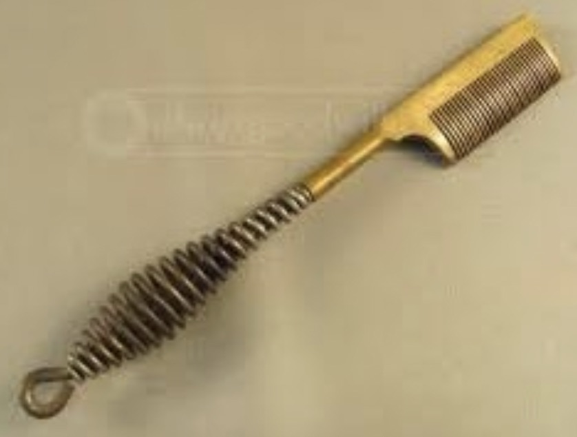
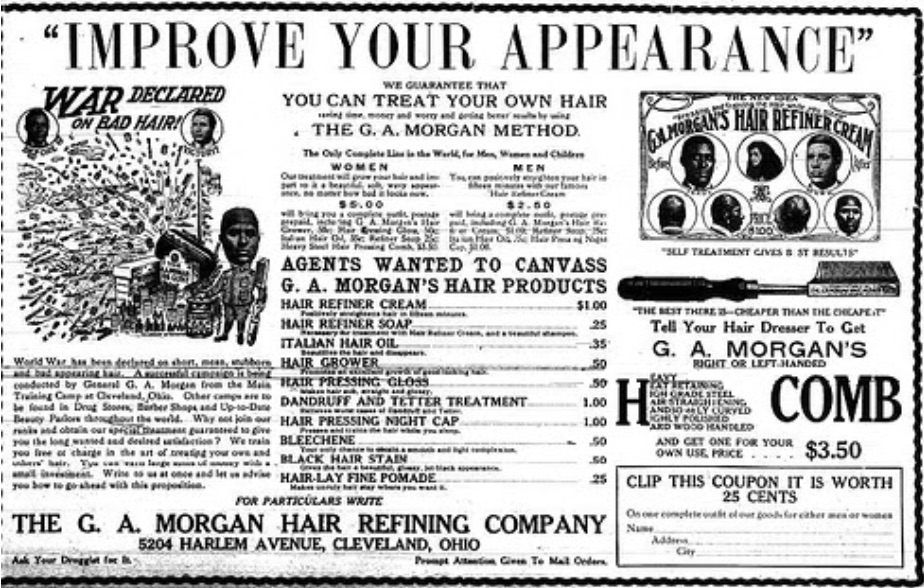

A Brief History of Black Hair
Hair has always been a very important part of the female identity, but for African American women in this country our path to loving this part of ourselves has been a difficult one. Due to the influence of European culture, the desire to have straight hair has been associated with beauty, thus Black women in America have gone to painful lengths to achieve the desired look. One example of such measures is known as the straightening or "hot" comb. Users would heat the meat comb to a desired temperature, and then carefully comb through the hair in order to lessen or remove the natural curl.

As time progressed, technology and science merged and a new way to achieve the straightened or "pressed" look was developed. The first hair relaxer was invented by Garret Augustus Morgan Sr. Mr. Morgan found that the chemical used for sewing machine repair would also relax the curls of kinky hair. His first live subject was an Airedale dog, which happens to have very curly hair. After having success on the dog, he used the relaxer on his own hair and found it to work. The G.A. Morgan Company was founded in 1913, and it produced the “hair refiner” as well as other hair care products such as dyes and processing creams.

The video below will provide a more in-depth examination of the subject